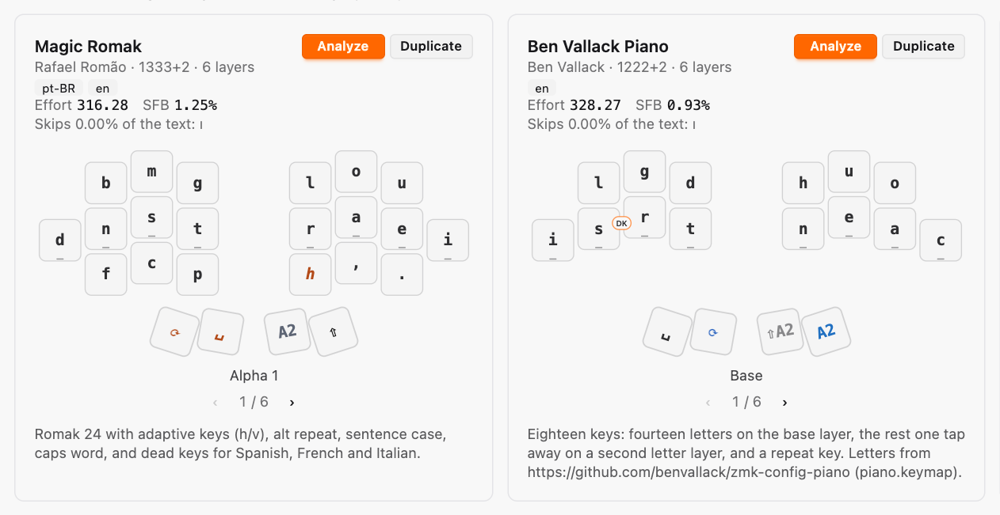

Rank with, or without
The Library ranks every layout on the same text, by Effort or SFB, with both on every card. Untick adaptive keys, the repeat key, typing combos or multi-letter macros, and each layout is ranked as it types without them: what each feature is worth, in two numbers. A card also says how much of the text a layout can't type.
